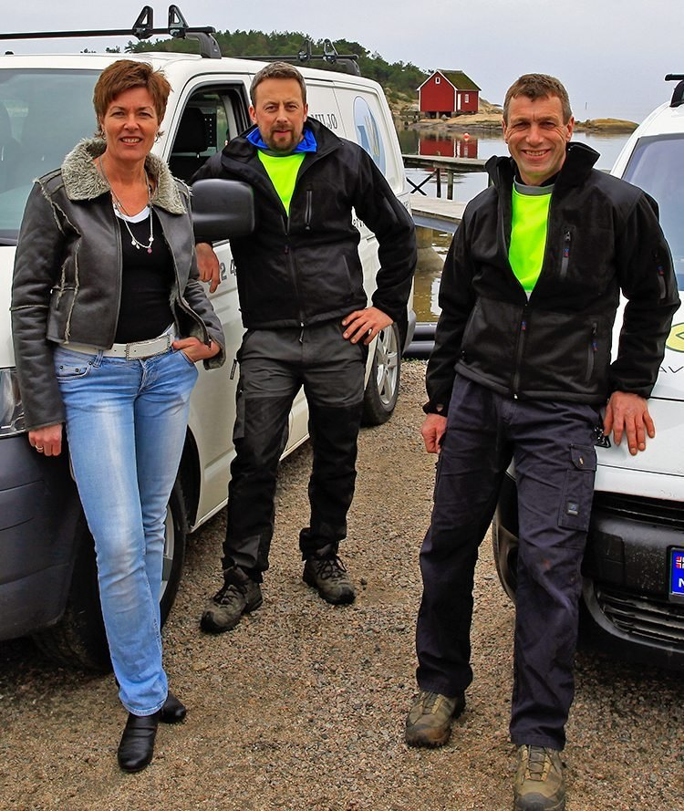
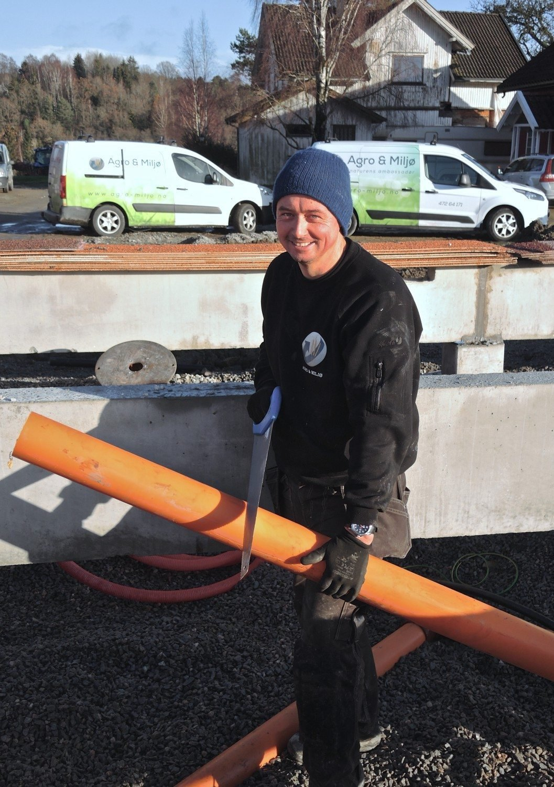
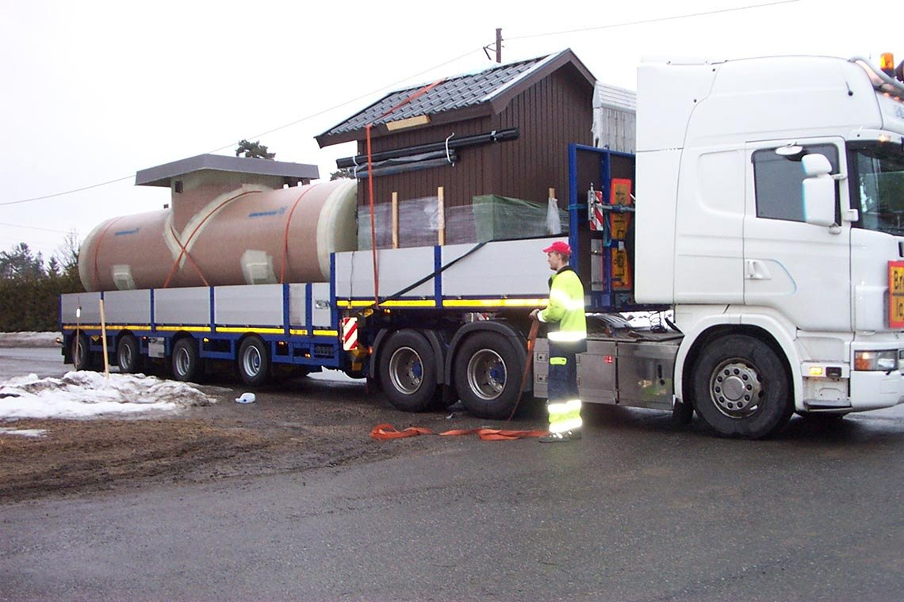
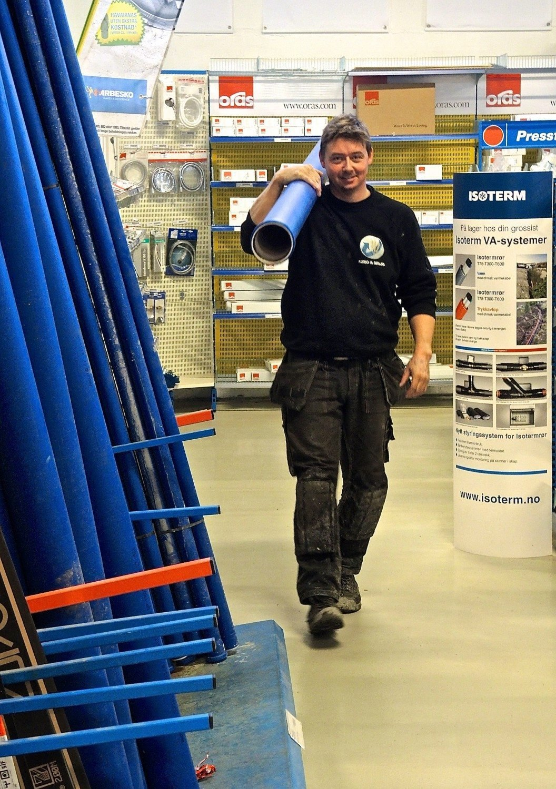
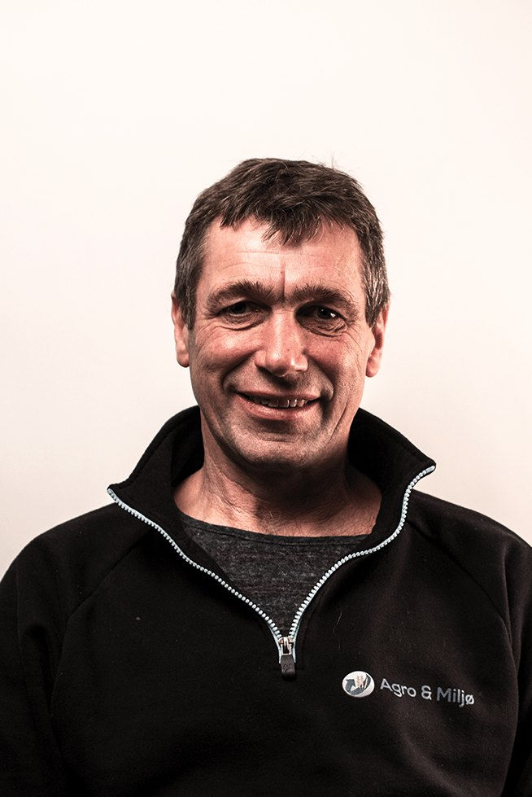
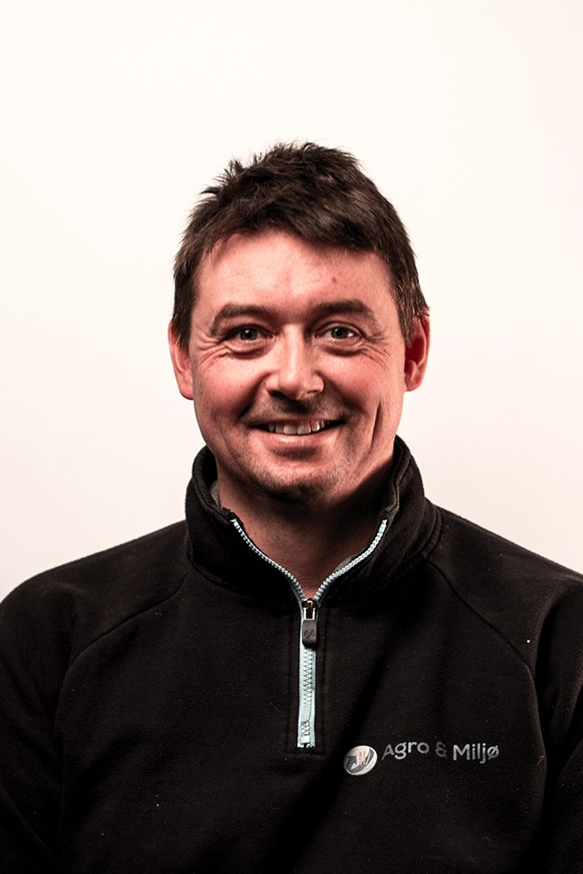
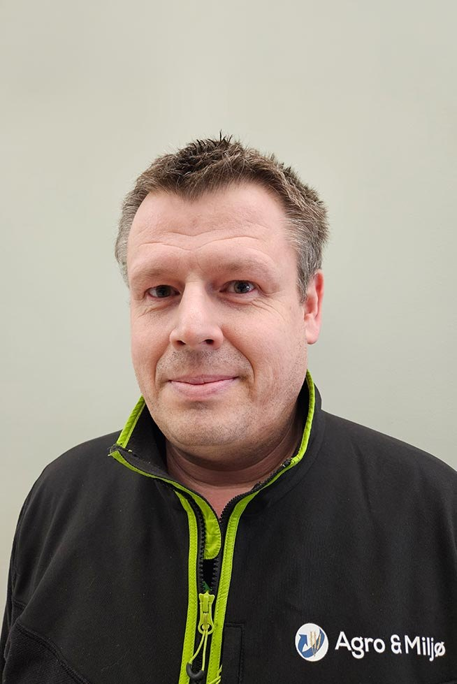

Uforpliktende befaring hjemme hos deg eller på hyttaUforpliktende pristilbud — du bestemmer deg etter befaringen, ikke før



Bor du utenfor det kommunale nettet, henger avløp, graving, søknad og rørlegging sammen. Vi tar hele kjeden.
Rundt Vansjø og i Morsa-området har mange husstander fått pålegg om å utbedre avløpet. Vi har levert flere anlegg der, og kjenner regelverket.
Biovac minirenseanlegg er typegodkjent for én til flere boenheter, og kan graves ned eller stå i kjeller eller uthus.
Mange kommuner krever det. Med fast lokal service unngår du at avløp kommer på avveie, og anlegget lever lenger.
Bad, sanitær og alle typer rørleggerarbeid i Fredrikstad og omegn, med rørleggermester Lars Erik Josefsen.
Befaringen er uforpliktende. Du får et pristilbud du kan tenke på, og du snakker med folk som er på vei i nærheten uansett.
Be om befaringTar 30 sekunderEller ring oss på 69 33 42 14, mandag til fredag 08–16.
Vet du ikke hvilken som gjelder deg, er det nettopp det befaringen er til for.
Biovac biologiske renseanlegg tar hånd om kloakk og utslipp der du bor. Typegodkjent, med SINTEF-godkjenning, for én til flere boenheter. Nedgravd, i kjeller eller i uthus. Haco gråvannsanlegg til hytta.
Kloakkpumper og pumpestasjoner etter behov, og serviceavtale med regelmessig rengjøring og forebyggende vedlikehold. Vi er hovedaktør på drift av private pumpestasjoner i Ytre Østfold.
Alle typer rørleggerarbeid i Fredrikstad og omegn. Bad og sanitæranlegg med utstyr fra anerkjente produsenter. Rørleggermester Lars Erik Josefsen gir faglig veiledning etter dine ønsker.
Vi gjør også hage- og jordbruksvanning og drift av private VA-anlegg med driftsovervåkning.
Fem faste og to innleide servicemedarbeidere med velutstyrte servicebiler og servicebåt. Vi er på plass til lands og til vanns i Østfold.



Hentet fra referansesakene på agro-miljo.no.
«Sammen med serviceavtalen fungerer Biovac’en på en så trygg og god måte at vi nesten glemmer at vi har eget renseanlegg. Selv på sommeren med mange gjester på hytta takler Biovac’en greit den økende belastningen.»
«Helt fra vi startet med planleggingen, prosjektering, søknader til offentlige myndigheter og under selve anleggsperioden fikk vi løpende god oppfølging. Ja til og med den oppsatte tidsplan ble fulgt.»
Nei. Vi utfører uforpliktende befaringer, og pristilbudet du får etterpå er også uforpliktende. Du bestemmer deg når du har sett tallene.
Ja. Med lang erfaring og god kunnskap om regelverk og forskrifter bistår vi med prosjektering, utslippssøknader og sameieavtaler.
Nei. Vi tilbyr komplette pakkeløsninger der renseanlegget leveres ferdig utført med gravearbeid og rørlegging. Da har du kun ett firma å forholde deg til.
Trygghet og driftssikkerhet sikres med faste lokale serviceavtaler. Vi driver og vedlikeholder private pumpestasjoner og renseanlegg i Ytre Østfold, og tilbyr driftsovervåkning.
Ja. Vi tilbyr alle typer rørleggerarbeid til konkurransedyktige priser i Fredrikstad og omegn, inkludert bad og sanitæranlegg. Rørleggermester Lars Erik Josefsen gir faglig veiledning etter dine ønsker.
Vi holder til på Gressvik i Fredrikstad og er Biovac sin distriktsrepresentant i Ytre Østfold. Vi har levert flere anlegg i kommunene rundt Vansjø, og har servicebåt for kundene ved sjøen.
Servicebilene våre kjører i Fredrikstad og Ytre Østfold hver dag. Ring, send e-post eller fyll ut skjemaet.